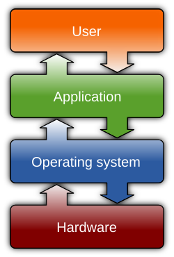

05. Programming & Software
Programming
Programming is the process of taking an algorithm and writing it in a language that a computer can understand and execute. This language is called a programming language.
A computer does not understand programming languages directly. It only understands machine code: very low-level instructions represented in binary (0s and 1s) that tell the CPU exactly what to do. A programming language (such as Python, C, Java, JavaScript, Lisp, or Prolog) is therefore a human-readable abstraction. It must be translated into machine code before the computer can run it.
Every programming language has rules about how things must be written. These rules are called syntax. If you break the syntax rules, the computer will show an error and will not run the program. However, even if your syntax is correct, your program may still not work the way you expect. That is where semantics comes in. Semantics refers to the meaning behind each statement.
Note
The instruction x = 5 + ; is a syntax error because the grammar is wrong. But the instruction x = "Hello" - 3 is syntactically correct but semantically meaningless, because subtracting a number from a word makes no logical sense.
Compiler vs Interpreter {#compiler-vs-interpreter}
A compiler is a program that translates the entire source code of a program (written in a high-level language like C++) into machine code or an intermediate representation close to machine code before the program runs. The output of this translation is usually an executable file (.exe, .out) or bytecode. Think of a compiler like a translator who reads a whole book, understands it fully, and then produces a translated version. After that, you can read the translated book without the translator.
An interpreter reads the source code line by line (or instruction by instruction), translating and executing on the spot. It does not create a separate executable file. Think of an interpreter like a live translator who translates every sentence as the speaker is talking. If you want to hear the speech again, you need the interpreter present.
Compiled programs usually run faster, because the translation work is done in advance, and many errors are detected before execution. However, compilation adds an extra step before running the program, and any change in the source code requires recompilation. The resulting executable is also often tied to a specific platform. Interpreted programs, on the other hand, typically start quickly and are easier to test and modify, since code can be run immediately without a separate build step. The downside is that they generally run more slowly, errors may appear only when a particular instruction is reached, and the program always depends on the presence of the interpreter at runtime.
A compiler is typically used when building software that must deliver predictable high performance. For example, when developing an iOS application such as a fitness tracker or a game, smooth performance, fast startup, and good battery efficiency are important. In such cases, most of the program is compiled ahead of time into native machine code tailored to the phone's processor. This allows the operating system to run the application directly, without translating the program during execution. Because the executable can be distributed and run independently of the compiler, compiled languages such as Swift or C++ are well suited for performance-critical, widely distributed software.
An interpreter is commonly used in situations where development speed, flexibility, and ease of experimentation are more important than maximum performance. For example, when automating a task like renaming files, collecting data from a website, or processing a spreadsheet, it is useful to write code and run it immediately without a separate build step. Interpreted environments allow programmers to test ideas incrementally and observe results right away, which makes debugging and iteration faster. For this reason, engineers, researchers, and students often use languages such as Python or JavaScript for scripting, data analysis, and rapid prototyping.
Important
Modern interpreted languages are not necessarily slow. Many, including JavaScript, use just-in-time compilation and runtime optimizations that translate frequently executed parts of the program into machine code while the program is running. As a result, the practical difference between compiled and interpreted systems is not simply speed, but when and how code is translated, and what trade-offs are made between performance, portability, and development convenience.
Note
Below is an example of an oversimplified workflow. Imagine you wrote a short program:
print("Hello")
print(10 + 5)
A compiler reads the entire program first, checks for syntax and many semantic errors, and then translates the whole code into machine language before running it. It is like translating an entire book from English to Azerbaijani, checking everything, and then giving the translated book to the reader.
- You write the complete program.
- The compiler analyzes the entire program at once.
- If no compile-time errors are found, it produces an executable program.
- Only after that does the program run and produce output.
If a compile-time error exists anywhere in the program, the program will not run at all.
An interpreter runs a program during execution, translating and executing instructions one at a time as the program proceeds. It is like a translator standing next to you: you speak a sentence in English, and the translator immediately says it in Azerbaijani. If the program is:
print("Hello")
print(10 + 5)
print(10 / 0) # error happens here
print("This will not run")
An interpreter may do the following:
1. Run the first line → prints Hello
2. Run the second line → prints 15
3. Run the third line → finds an error (division by zero) and stops.
The last line will not run, but the first two lines still worked.
Evolution of Programming Languages
Programming languages have evolved over time to make communication between humans and computers easier. Early computers could only understand sequences of 0s and 1s (machine code), but modern languages allow us to write instructions in a way that is closer to human thinking. This development is divided into generations, where each generation makes programming more abstract, simpler, and more powerful than the previous one.
First-generation (Machine Language). Consists only of binary digits 0s and 1s. Directly understood by the computer but extremely difficult for humans to write or debug.
10110000 00000101 (this may imply load 5 into register)
10110001 00000110
00000001 (this may imply addition)
Second-generation (Assembly Language). Uses symbolic codes or abbreviations instead of binary. Easier than machine language, but still closely tied to hardware. Needs an assembler to convert to machine code.
MOV AX, 5 ; move 5 into register AX
MOV BX, 6 ; move 6 into register BX
ADD AX, BX ; add BX to AX
Third-generation (High-Level Languages). Uses English-like words and mathematical symbols. Easier to read, write, and understand. Portable across different machines. See the Python code below.
a = 5
b = 6
sum = a + b
print(sum)
Fourth-generation (Very High-Level Languages). Designed to reduce programming effort. Focuses more on what needs to be done rather than how. Often used in databases and report generation. See SQL code below.
SELECT * FROM users WHERE name='Codd'
Fifth-generation (Logic-Based Languages). Based on formal logic, rules and facts, automated inference. The programmer specifies knowledge, not procedures. See Prolog code below.
parent(alice, bob).
parent(bob, carol).
parent(carol, dave).
ancestor(X, Y) :- parent(X, Y).
ancestor(X, Y) :- parent(X, Z), ancestor(Z, Y).
Example queries a user would ask the Prolog system:
?- parent(alice, bob).
?- ancestor(alice, carol).
?- ancestor(alice, dave).
?- ancestor(X, dave).
Post-Fifth Generation (Generative AI Systems). Modern computing introduces a different paradigm based on machine learning and generative models. In this approach, systems are not programmed with explicit rules or logical facts. Instead, they are trained on large amounts of data and learn statistical patterns that allow them to generate text, code, images, or actions in response to human instructions. Unlike logic-based systems, generative AI does not perform formal logical inference and does not guarantee correctness. Its strength lies in handling ambiguity, incomplete information, and complex real-world data at scale. Users typically interact with such systems using natural language prompts, examples, or goals, rather than writing precise programs. For this reason, generative AI is best understood not as a new programming language generation, but as a new interaction and computation paradigm built on top of existing languages and systems.
Software
Software consists of computer programs that instruct the computer what to do, and includes design documents and specifications (documentation). Software converts user commands into machine-level instructions and enables computers to perform everything from calculations to complex design simulations.
System software manages and operates the computer hardware so that other programs can run. It provides a platform for application software. Below are types and examples of the system software.
Note
When you turn on a laptop, the operating system (e.g. Windows, macOS, Linux) loads first. It checks the keyboard, touchpad, and memory, and loads drivers for your hardware. Only then can you open applications such as Google Chrome, Microsoft Word, or VS Code.
| Type | Purpose | Examples |
|---|---|---|
| Operating Systems | Manage hardware and software resources, provide user interface | Windows, macOS, Linux |
| Device Drivers | Control and communicate with specific hardware devices | Printer driver, GPU driver |
| Utility Programs | Perform maintenance and optimization tasks | File Manager, Disk Cleanup, Antivirus |
Note
When you power on a smartphone, Android or iOS initializes the display, touchscreen, and sensors. After that, you can launch applications like WhatsApp, Spotify, or Instagram.
Application software consists of programs designed for end users to perform particular functions. This includes everything from productivity tools to entertainment and educational programs (e.g., Microsoft Word, Adobe Photoshop, Spotify, Duolingo).
Note
A user might write and edit documents in LibreOffice or develop code in Visual Studio Code (application software) running on Ubuntu (system software), while the NVIDIA graphics driver (device driver) handles display and hardware acceleration, demonstrating how application software, the operating system, and device drivers work together to perform tasks efficiently.
In addition to the distinction between system and application software, programs can also be categorized by how they are licensed and distributed, as proprietary or off-the-shelf software. Many private companies choose proprietary software such as Microsoft Office 365 because it offers professional customer support, cloud integration, and regular security updates. In contrast, public institutions and schools often adopt open-source alternatives like LibreOffice or Google Workspace (free edition) to reduce licensing costs while still providing students and staff with essential tools for document creation and collaboration. This demonstrates how the choice between proprietary and open-source software often depends on an organization's budget, technical needs, and support requirements.
Exercise
What are the advantages/disadvantages of proprietary and open-source software?
Operating Systems

Operating system (OS) is the core software that manages all hardware and software resources. The OS acts as a bridge between users, applications, and computer hardware. It translates high-level user commands into machine-level operations and manages system resources such as memory, processing time, and device communication to ensure efficient coordination across all components.
Note
Suppose a user is editing a document in Microsoft Word while listening to music on Spotify and downloading a file from the Internet. The operating system coordinates these simultaneous activities by dividing processor time among the programs, allocating memory to each, and managing input/output requests so that the music continues playing without interruptions and the document remains responsive.
The kernel is the core part of an operating system. The kernel is the core component responsible for controlling the computer's hardware and managing system resources. It does not provide windows, menus, or buttons, and users do not interact with it directly. Instead, the kernel acts as a mediator between software and hardware, ensuring that programs use the CPU, memory, storage, and devices in a safe and orderly way.
Note
When an application needs to perform an action such as saving a file, accessing the internet, or displaying graphics, it cannot communicate with the hardware on its own. It sends a request to the operating system, which is handled by the kernel. The kernel checks whether the request is allowed, allocates the necessary resources, and communicates with the appropriate hardware through device drivers. This prevents programs from interfering with each other or damaging the system.
The kernel is also responsible for multitasking. When multiple programs are running at the same time, the kernel rapidly switches the CPU between them, giving each program a small time slice. To the user, all programs appear to run simultaneously, but the kernel carefully controls this sharing to keep the system stable and responsive.
An OS includes much more than the kernel. It also contains system libraries, background services, device drivers, and user interfaces. This is why different operating systems can be built around the same kernel. For example, Ubuntu uses the Linux kernel together with tools and interfaces designed for desktop and server use, while Android uses the same Linux kernel but combines it with a mobile-focused runtime and user interface. In this way, the kernel provides the foundation, and the OS builds a complete environment on top of it.
Additional Material
- Programming Basics: Statements & Functions: Crash Course Computer Science #12
- Interpreters and Compilers (Bits and Bytes, Episode 6)
- Why You Shouldn't Nest Your Code
- Operating Systems: Crash Course Computer Science #18
- The real reason Boeing's new plane crashed twice
- Ariane 5 rocket launch explosion
- Programming myths that waste your time